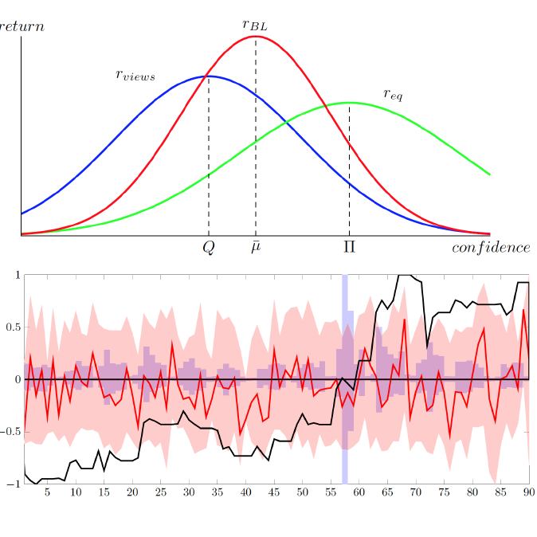

Frank Xing, PhD

Bio
※ I spent my boyhood in Wuhan, a punk metropolis in central China. But illumination seldom comes to my rescue and all the time seems lost in history before I moved to Beijing in 2011. However, my enthusiasm for exploring life in the ancient capital faded after I received my bachelor's degrees in Information Systems and Economics from Peking University. So I drifted to Singapore and did my PhD at Nanyang Technological University, co-advised by Prof. Erik Cambria and Prof. Roy Welsch. After the one-year industrial experience with AIR Lab at Continental, I am Presidential Postdoctoral Fellow at Nanyang Technological University today, working with Prof. Sun Aixin and Prof. Erik Cambria. ※ My research interest spans NLP, Sentiment Analysis, Business Intelligence, and AI empowered finance.
※ Academic genealogy, a.k.a. how you do research [expand].
※ My Erdös number is 3 and Markowitz number is 4.
News
※ I am actively looking for a faculty position. ※ New book Intelligent Asset Management" available from Amazon!
Projects
Only active projects are described here. For a full list of publications see DBLP.
Intelligent Bayesian Asset Allocation
The fast spread of information across social media have made managing global assets increasingly risky and challenging. Classic asset allocation methods relied on financial experts' experience, but overlooked public opinions and sentiment. Inspired by the idea of collective intelligence, this project leverages on sentic computing to monitor public moods, and further fuses the asset pricing model. Simulations suggest iBAA to be a powerful approach to investment.
- Xing, F. Z.; Cambria, E.; Zhang, Y. (2019). Sentiment-Aware Volatility Forecasting. Knowledge-Based Systems 176 pp 68-76.
- Xing, F. Z.; Cambria, E.; Welsch, R. E. (2018). Intelligent Bayesian Asset Allocation via Market Sentiment Views. IEEE Computational Intelligence Magazine 13(4) pp 25-34.
- Xing, F. Z.; Cambria, E.; Malandri, L.; Vercellis, C. (2018). Discovering Bayesian Market Views for Intelligent Asset Allocation. ECML-PKDD. [data] [code]
- Malandri, L; Xing, F. Z.; Orsenigo, C.; Vercellis, C.; Cambria, E. (2018). Public Mood-Driven Asset Allocation: the Importance of Financial Sentiment in Portfolio Management. Cognitive Computation 10(6) pp 1167–1176.
Asset Dependence Modeling
Estimating correlations among different assets is an indispensable step under the the framework of modern portfolio theory. While the correlations induced from price data are unreliable, especially in high-dimensional space. This project seeks alternative sources of information using NLP techniques, to facilitate robust and large-scale modeling of the dependence structure. The methods developed have great applicational potential for portfolio risk management.
- Xing, F. Z.; Cambria, E.; Welsch, R. E. (2019). Growing Semantic Vines for Robust Asset Allocation. Knowledge-Based Systems 165 pp 297-305. [code]
- Bai, H.; Xing, F. Z.; Cambria, E.; Huang, W.-B. (2019). Business taxonomy construction using concept-level hierarchical clustering. FinNLP. [data]
Financial Knowledge Engineering
Language in financial domain is characterized by its frequent use of jargons and commonsense knowledge. Numbers, time expressions, and arguments, which are trivial in general domain without context play an important role in understanding financial texts. This project combines the top-down ontology construction approach and bottom-up machine learning techniques to build a knowledge base for financial analysis and reasoning.
- Xing, F. Z.; Pallucchini, F.; Cambria, E. (2019). Cognitive-Inspired Domain Adaptation of Sentiment Lexicons. Information Processing & Management 56(3) pp 554-564. [code]
- Xing, F. Z.; Cambria, E.; Welsch, R. E. (2018). Natural Language based Financial Forecasting: A Survey. Artificial Intelligence Review 50(1) pp 49–73.